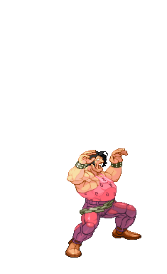

STANCE

Stance fighters are characters that can switches between 2 or more forms that are called stances. This allows them to have different move sets for each one. They may have a stance that keeps, enhances, or changes their style. Their complexity is based on how complex their stance is and how it affects their normal fighting style. They can use this to their advantage when planning for different approaches in defeating their opponent.
Toolkit
- 2 or more forms with different move sets and or play styles
Strengths
- Multiple forms
- More options to react to opponent
Weaknesses
- Takes time to switch stance
- Switching stances may cause blunder
How should I play as this fighter?
Know what each of your stances does. There are different strategies in playing each one. Some may require more defense than offense, and others may be very unorthodox in their set ups. Learning them allows you to look at a situation and react effectively.
How can I beat this fighter?
Learn what each of the stances are good and bad for, and counter accordingly. Some stances may take some time for the fighter to bring out, look for these gaps and capitalize.
- Vega (Street Fighter II, 1991)
- YAlisa Bosconovitch (Tekken 6: Bloodline Rebellion, 2009)
- Yoshimitsu (Tekken, 1994)
Evelynn's Notes & Difficulty Rating
4/5
Stance characters are quite complicated to understand because of the uniqueness to each of their move sets. It can take a while for new players to grasp just one, but the full potential of a stance is only realized when the player is able to incorporate all aspects of the character.